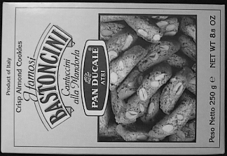

08-特征匹配¶
- 学习如何将一张图片与其他图片进行特征匹配
- 学习使用OpenCV中的Brute-Force matcher 和 FLANN Matcher
Brute-Force Matcher入门¶
Brute-Force Matcher（BF Matcher）可以翻译成野蛮匹配器，他的步骤是先选取第一个图片特征集合的一个特征描述符，然后匹配另一个集合的所有特征，通过一些距离算法得到一个最近的距离distance。接下来我们通过简单的例子展示如何对两张图片进行特征匹配。如下：
- box.png

- box_in_scene.png

BFMatching with ORB Descriptors¶
1. 查找特征点和描述符¶
初始化图片并使用ORB查找特征点和描述符
import numpy as np
import cv2
MAX_MATCHES = 500
fn1 = "./data/box.png" # trainImage
fn2 = "./data/box_in_scene.png" # queryImage
# 加载并将图片转为灰度模式
img1 = cv2.imread(fn1, cv2.IMREAD_COLOR)
img2 = cv2.imread(fn2, cv2.IMREAD_COLOR)
img1Gray = cv2.cvtColor(img1, cv2.COLOR_BGR2GRAY)
img2Gray = cv2.cvtColor(img2, cv2.COLOR_BGR2GRAY)
# 初始化检测器
# 设置检测最大特征数量为400
detector = cv2.ORB_create(MAX_MATCHES)
# 开始检测ORB特征，计算描述符
keypoints1, descriptors1 = detector.detectAndCompute(img1Gray, None)
keypoints2, descriptors2 = detector.detectAndCompute(img2Gray, None)
print("img1: {} features, img2: {} features".format(len(keypoints1), len(keypoints2)))
2. 创建并使用BFMatcher¶
使用cv2.BFMatcher_create创建BFMatcher时，有两个参数：
参数1：normType，指定距离测量规则，默认值是cv2.NORM_L2，一般和cv2.NORM_L1用于SIFT、SURF检测。当我们使用基于二进制字符串描述符的算法如ORB，BRIEF，BRISK等，我们需要使用cv2.NORM_HAMMING2，它使用Hamming distance作为距离测量规则。
参数2：crossCheck，boolean类型，默认false，如果设置为True，则返回经过校验测试的一一对应的最佳匹配结果。
GOOD_MATCH_PERCENT = 0.15
# 创建BFMatcher, 开启crossCheck获取更精确的结果
mathcher = cv2.BFMatcher_create(cv2.NORM_HAMMING, crossCheck=True)
# 对两张图片的描述符进行匹配
matches = mathcher.match(descriptors1, descriptors2, None)
# 根据评分排序, 由小到大
matches.sort(key=lambda x: x.distance, reverse=False)
# 移除较差的匹配结果, 只保留前15%的结果
good_matches_num = int(len(matches) * GOOD_MATCH_PERCENT)
good_matches_num = max(good_matches_num, 10) # 至少保证有10个
matches = matches[:good_matches_num]
# 绘制这些匹配点
img_matches = cv2.drawMatches(img1, keypoints1, img2, keypoints2, matches, None, flags=cv2.DRAW_MATCHES_FLAGS_NOT_DRAW_SINGLE_POINTS)
# cv2.imwrite("matchs.jpg", img_matches)
cv2.imshow("matchs", img_matches)
我们通过sort给匹配结果按照distance进行排序（值越小越靠前），已获得最佳的匹配结果。然后我们前15%的匹配结果。（如果匹配得到的太少，可以增加这个值），绘制函数cv2.drawMatches最后一个参数flags传cv2.DRAW_MATCHES_FLAGS_NOT_DRAW_SINGLE_POINTS保证只绘制匹配成功的点。
- 输出结果
3. 认识knnMatch和drawMatchesKnn¶
另外，BFMatcher创建之后，两个重要的方法是BFMatcher.match()和BFMatcher.knnMatch()。第一个返回最佳匹配。第二种方法返回k个最佳匹配，其中k由用户指定。当我们需要对此做其他工作时，它可能会很有用。
就像我们使用cv2.drawKeypoints()绘制关键点一样，cv2.drawMatches()可以帮助我们绘制匹配项。它水平摆放两张图像，并绘制从第一张图像到第二张图像的线，以显示最佳匹配。
还有cv2.drawMatchesKnn()可以绘制所有k个最佳匹配。如果k = 2，它将为每个关键点绘制两条匹配线。因此，如果要选择性地绘制指定匹配，则需要通过遮罩。
Matcher Object¶
matches = mathcher.match(descriptors1, descriptors2, None)该函数返回的结果matchs是一个DMatch对象的列表list，DMatch对象包含以下属性：
DMatch.distance- 描述符之间的距离，值越小越好DMatch.trainIdx- 该匹配的描述符在train图片描述符集合中的索引DMatch.queryIdx- 该匹配的描述符在query图片描述符集合中的索引DMatch.imgIdx- train图片的索引
BFMatching with SIFT Descriptors¶
我们使用BFMatcher.knnMatch()来获取k组最佳匹配，本例中，我们设置 k=2 进而根据D.Lowe的论文进行比率测试（ratio test）
import numpy as np
import cv2
from fmatch import draw_match
MIN_MATCH_COUNT = 10
GOOD_MATCH_PERCENT = 0.25
def main():
im1 = cv2.imread('./data/box.png', cv2.IMREAD_COLOR) # trainImage
im2 = cv2.imread('./data/box_in_scene.png', cv2.IMREAD_COLOR) # queryImage
img1 = cv2.cvtColor(im1, cv2.COLOR_BGR2GRAY)
img2 = cv2.cvtColor(im2, cv2.COLOR_BGR2GRAY)
# Initiate SIFT detector
sift = cv2.xfeatures2d.SIFT_create(500)
# find the keypoints and descriptors with SIFT
kp1, des1 = sift.detectAndCompute(img1, None)
kp2, des2 = sift.detectAndCompute(img2, None)
print("kp1: {}, kp2: {}".format(len(kp1), len(kp2)))
cv2.drawKeypoints(im1, kp1, im1, flags=cv2.DRAW_MATCHES_FLAGS_DEFAULT)
cv2.imshow("kp1", im1)
cv2.drawKeypoints(im2, kp2, im2, flags=cv2.DRAW_MATCHES_FLAGS_DRAW_RICH_KEYPOINTS)
cv2.imshow("kp2", im2)
# 创建BFMatcher并进行knn匹配
bfMatcher = cv2.BFMatcher()
matches = bfMatcher.knnMatch(des1, des2, k=2)
# 进行比率检测ratio test
good = []
for m, n in matches:
if m.distance < 0.75 * n.distance:
good.append([m])
# drawMatchesKnn接受的参数matches1to2为一个二维列表
img3 = cv2.drawMatchesKnn(img1, kp1, img2, kp2, good, None, flags = cv2.DRAW_MATCHES_FLAGS_NOT_DRAW_SINGLE_POINTS)
cv2.imshow("matchs", img3)
return 0
if __name__ == '__main__':
main()
cv2.waitKey(0)
- 输出结果
FLANN based Matcher¶
FLANN是Fast Library for Approximate Nearest Neighbors.的缩写。快速近似最近邻搜索库。 它包含一组算法，这些算法针对大型数据集中的快速最近邻搜索和高维特征进行了优化。对于大型数据集，它的运行速度比BFMatcher更快。我们将编写第二个基于FLANN的匹配器示例。
对于基于FLANN的匹配器，我们需要传递两个字典，这些字典指定要使用的算法及其相关参数等。
IndexParams¶
第一个是IndexParams。对于各种算法，要传递的信息在FLANN文档中进行了说明。
- 对于SIFT，SURF等算法，初始化如下：
index_params = dict(algorithm = FLANN_INDEX_KDTREE, trees = 5)
- 对于ORB算法，初始化如下，以下参数为推荐参数，可自行修改：
index_params= dict(algorithm = FLANN_INDEX_LSH,
table_number = 6, # 12
key_size = 12, # 20
multi_probe_level = 1) #2
SearchParams¶
第二个字典是SearchParams。它指定索引中的树应递归遍历的次数。较高的值可提供更好的精度，但也需要更多时间
search_params = dict(checks=100)
匹配代码如下：
import numpy as np
import cv2
from fmatch import draw_match
MIN_MATCH_COUNT = 10
GOOD_MATCH_PERCENT = 0.25
def main():
im1 = cv2.imread('./data/box.png', cv2.IMREAD_COLOR) # trainImage
im2 = cv2.imread('./data/box_in_scene.png', cv2.IMREAD_COLOR) # queryImage
img1 = cv2.cvtColor(im1, cv2.COLOR_BGR2GRAY)
img2 = cv2.cvtColor(im2, cv2.COLOR_BGR2GRAY)
# Initiate SIFT detector
sift = cv2.xfeatures2d.SIFT_create(500)
# find the keypoints and descriptors with SIFT
kp1, des1 = sift.detectAndCompute(img1, None)
kp2, des2 = sift.detectAndCompute(img2, None)
print("kp1: {}, kp2: {}".format(len(kp1), len(kp2)))
cv2.drawKeypoints(im1, kp1, im1, flags=cv2.DRAW_MATCHES_FLAGS_DEFAULT)
cv2.imshow("kp1", im1)
cv2.drawKeypoints(im2, kp2, im2, flags=cv2.DRAW_MATCHES_FLAGS_DRAW_RICH_KEYPOINTS)
cv2.imshow("kp2", im2)
# FLANN parameters
FLANN_INDEX_KDTREE = 0
index_params = dict(algorithm=FLANN_INDEX_KDTREE, trees=5)
# 指定索引中的树应该递归遍历的次数。值越高，精度越高，但是也越耗时
search_params = dict(checks=50) # or pass empty dictionary
# 创建Flann匹配器
flann = cv2.FlannBasedMatcher(index_params, search_params)
# 执行匹配
matches = flann.knnMatch(des1, des2, k=2)
# 创建掩膜， 只绘制好的匹配
matchesMask = [[0, 0] for i in range(len(matches))]
# ratio test as per Lowe's paper
for i, match in enumerate(matches):
(m, n) = match
# print(len(match), m.distance, n.distance)
if m.distance < 0.7 * n.distance:
matchesMask[i] = [1, 0]
draw_params = dict(matchColor=(0, 255, 0),
singlePointColor=None,
matchesMask=matchesMask,
flags=0)
img3 = cv2.drawMatchesKnn(img1, kp1, img2, kp2, matches, None, **draw_params)
cv2.imshow('matches', img3)
# plt.imshow(img3, 'gray'),plt.show()
return 0
if __name__ == '__main__':
main()
cv2.waitKey(0)
- 输出结果